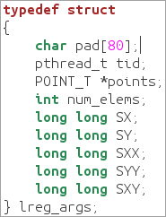

In the
Source window, you identified the function that results in false
sharing. To solve this issue, fo the following:
In the
Source window, you identified the function that results in false
sharing. To solve this issue, fo the following:
Open the Code Editor
In the
Source window, click the
 Source Editor button to
open the
linear_regression_pthread.c
file in the default code editor at the highlighted line:
Source Editor button to
open the
linear_regression_pthread.c
file in the default code editor at the highlighted line:

Remove False Sharing
To remove false sharing, edit the lreg_args structure by adding padding so that threads always access different cache lines. Do the following:
Add a new line after line 49 and enter char pad[80];
This command adds required padding to the lreg_args structure.
Save the changes made in the source file.
Browse to the directory where you extracted the sample code (for example, /home/myuser/samples/tachyon).
Rebuild your target in the release mode using the make command as follows:
$ make clean
$ make
The lreg-pthread application is rebuilt and stored in the linear_regression directory.